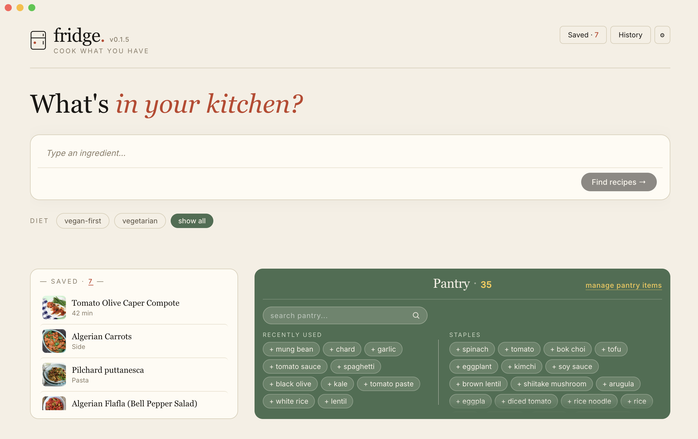
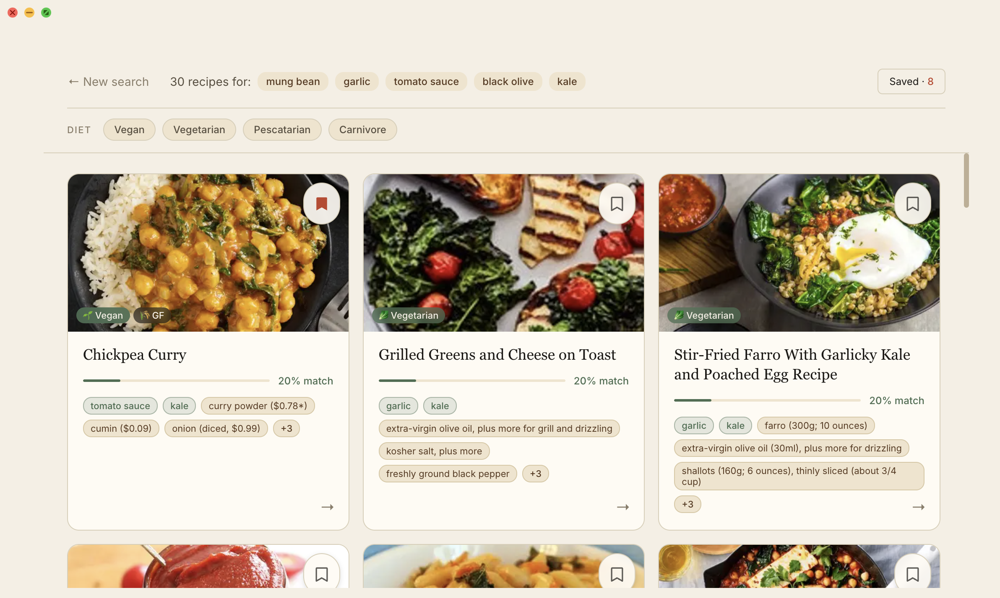
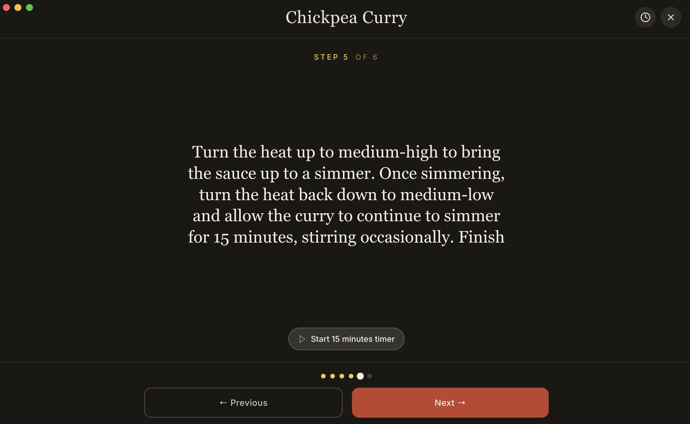

Cook what you have.
A small guide.
Most recipe apps assume you start with a recipe and shop for ingredients. I do the opposite. I open the fridge, look at what's there, and figure out what to make. Fridge is built around that.
Type what you have. Get back recipes that actually match. Save the ones you like, set a diet preference, and step into a focused cook mode when it's time to actually make something.
The recipes come from six places: Epicurious, Budget Bytes, Serious Eats, The Kitchn, Minimalist Baker, and Love & Lemons. Around ten thousand of them, all with photos, each linked back to its original source if you want to read more.
I built this over about two weeks — brainstorming with Claude, generating code with Cursor, and many evenings of trial and error. It's a desktop app centered on React, shipped inside Electron. Everything runs locally on your machine; nothing leaves it.
One more thing: I'm vegan, so Fridge leans vegan-first by default. There's a switch on the home page if you want to see everything. 🌱 I hope it's not too annoying.
If something breaks, or you have an idea, or you just want to say hi — nicocrisafulli@gmail.com.
— Nico

Add ingredients you have on hand. Tap a chip to add it to your search. Ingredients on the countertop lists up to ten of your latest picks on the left; ingredients on the shelves, the rest of your saved pantry. Whatever you search for sticks around so you don't retype it next time.
Type ingredients into the search bar or tap pantry chips, then "Find recipes." You get a grid of matches ranked by how well they fit what you have — plus how many extra ingredients you'd need to buy.

Pick vegan, vegetarian, pescatarian, or carnivore. Fridge uses an ingredient-based inference (not certified labeling, but reliable for most cases). The default is vegan-first.
Hit the bookmark on any recipe. Saved recipes live on the home page, and your search history is one tap away if you want to find that thing you looked at last week.

From any recipe detail page, hit Enter cooking mode to flip into a focused view: one step at a time, big readable text, hands-friendly. Click anywhere to advance, or use arrow keys if you're at a keyboard. Inline timers appear when a step mentions one — "simmer 15 minutes" gets a tappable timer right there in the step.